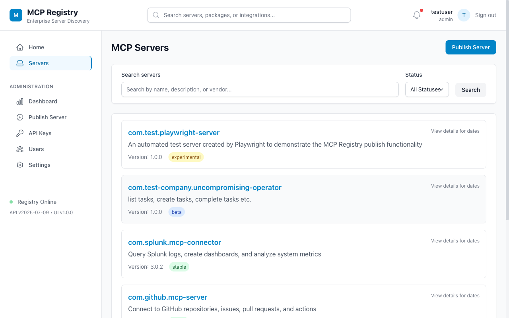

API
Spec-Aligned Registry
Server listing, detail lookup, publication, deprecation, deletion, and metadata controls built around the MCP registry shape.
Enterprise MCP governance
A controlled registry for publishing, discovering, approving, and monitoring Model Context Protocol servers across an organization.
The sub-registry gives platform teams a place to make MCP tools discoverable without losing governance. Publishers add metadata, operators track lifecycle and metrics, and consumers can evaluate integrations before connecting agents to them.
API
Server listing, detail lookup, publication, deprecation, deletion, and metadata controls built around the MCP registry shape.
AUTH
JWT sessions, scoped API keys, admin bootstrap protection, hashed secrets, and role-aware management surfaces.
OPS
Health checks, Prometheus-style metrics, audit records, lifecycle status, and readiness for Docker deployment.
The React UI is intentionally work-focused: browse a catalog, inspect MCP server metadata, publish new integrations, manage API keys, and administer users or settings from one console.

Filter available MCP servers by status, name, package, and integration domain.
Capture repository, package, remote transport, headers, metadata, and review details before registration.
Use admin controls for settings, users, API keys, and operational health.
Registry entries move through a structured workflow so consumers see usable metadata instead of a raw connector name.
Name the MCP server, set version and lifecycle status, and identify owners.
Add repository, package registry, transport, and remote configuration details.
Confirm metadata, security classification, and consumer-facing descriptions.
Expose the approved entry through API search, UI browse, and service automation.
The repository includes Docker, Prisma migrations, generated client code, and a scripted HTTPie demo.
# install and configure npm install cp .env.example .env # start services npm run docker:up npm run db:migrate npm run dev # validate the static pages npm run docs:check # run the API demo ./docs/demo/demo-httpie.sh UI: http://localhost:5173 API: http://localhost:3010 Swagger: http://localhost:3010/docs